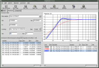
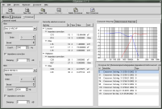
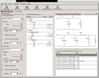
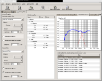

GnomeSpeakers
Home |
History |
Screenshots |
Support |
Documentation |
Help needed |
gspeakers@Sourceforge
Screenshots
GSpeakers-0.10 (Gtkmm-2.0)

Larger screenshot
Driver tab. Here you can enter driver parameters. Use this tab sort of like a datasheet.
GSpeakers-0.10 (Gtkmm-2.0)

Larger screenshot
This is the part of the program where you design your loudspeaker enclosure.
GSpeakers-0.10 (Gtkmm-2.0)

Larger screenshot
GSpeakers contains very powerful features which will help you to design a crossover for your loudspeakers. Here you can
see the estimated frequnecy response of the loudspeaker system.
GSpeakers-0.10 (Gtkmm-2.0)

Larger screenshot
The new (in GSpeakers-0.9) visual crossover view.
GSpeakers-0.10 (Gtkmm-2.0)

Larger screenshot
GSpeakers crossover tab with swedish translation activated.
GSpeakers-0.1 (Gtkmm-1.2)

Larger screenshot
Home |
History |
Screenshots |
Support |
Documentation |
Help needed |
gspeakers@Sourceforge
© Daniel Sundberg, dss@home.se
Site hosted by: